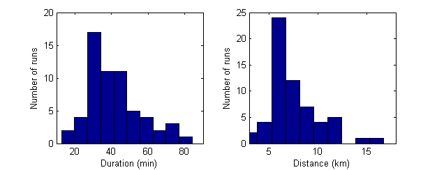
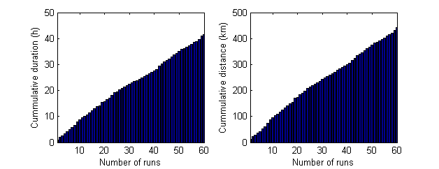
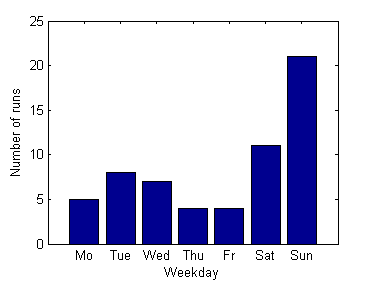
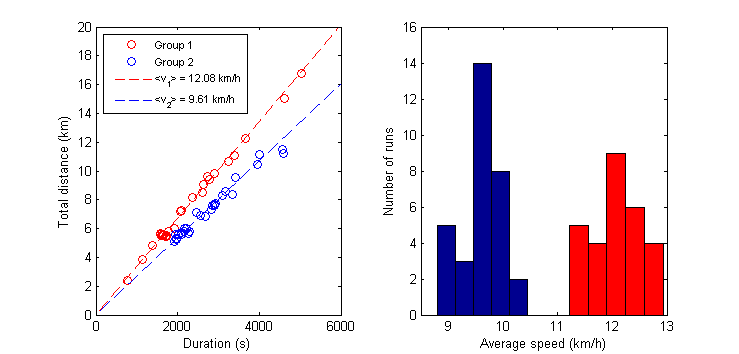

Running Statistics 2012
Contents
General statistics
disp(sprintf('Number of runs: %i',size(myruns,1)))
disp(sprintf('Total distance: %.1f km',sum(myruns(:,3)/1000)))
disp(sprintf('Total dduration: %.1f h',sum(myruns(:,2)/3600)))
figure(4)
clf
subplot(1,2,1)
hist(myruns(:,2)/60,10)
xlim([10 90])
xlabel('Duration (min)')
ylabel('Number of runs')
subplot(1,2,2)
hist(myruns(:,3)/1000,10)
xlabel('Distance (km)')
ylabel('Number of runs')
xlim([3 18])
figure(3)
clf
subplot(1,2,1)
bar(cumsum(myruns(:,2))/3600)
xlim([1 size(myruns,1)])
xlabel('Number of runs')
ylabel('Cummulative duration (h)')
subplot(1,2,2)
bar(cumsum(myruns(:,3))/1000)
xlim([1 size(myruns,1)])
xlabel('Number of runs')
ylabel('Cummulative distance (km)')
Number of runs: 60
Total distance: 442.4 km
Total dduration: 41.6 h
 
Weekday analysis
figure(2)
clf
weekdayfreq=zeros(1,7);
for k=1:size(myruns,1)
weekdayfreq(myruns(k,1)) = weekdayfreq(myruns(k,1)) + 1;
end
bar(weekdayfreq)
xlabel('Weekday')
set(gca,'XTickLabel',{'Mo','Tue','Wed','Thu','Fr','Sat','Sun'})
ylabel('Number of runs')

Average speed
avg = myruns(:,3)./myruns(:,2);
clusteridx = kmeans(avg,2);
group1 = [];
group2 = [];
for k=1:size(clusteridx,1)
if (clusteridx(k) == 1)
group1 = [group1; myruns(k,:)];
else
group2 = [group2; myruns(k,:)];
end
end
figure(1)
clf
subplot(1,2,1)
hold on
plot(group1(:,2),group1(:,3)/1000,'ro')
plot(group2(:,2),group2(:,3)/1000,'bo')
xlim([0 6000])
ylim([0 20])
box on
xlabel('Duration (s)')
ylabel('Total distance (km)')
avg1 = group1(:,3)./group1(:,2);
avg2 = group2(:,3)./group2(:,2);
totalavg1 = mean(avg1);
totalavg2 = mean(avg2);
fittime = 0:20000;
fitdist1 = fittime*totalavg1;
fitdist2 = fittime*totalavg2;
plot(fittime,fitdist1/1000,'r--','LineWidth',1)
plot(fittime,fitdist2/1000,'b--','LineWidth',1)
h_legend = legend('Group 1','Group 2',sprintf('<v_{1}> = %.2f km/h',totalavg1*3.6),sprintf('<v_{2}> = %.2f km/h',totalavg2*3.6),'Location','NorthWest');
set(h_legend,'FontSize',8);
subplot(1,2,2)
hist(avg1*3.6,5)
h = findobj(gca,'Type','patch');
set(h,'FaceColor','k')
hold on
hist(avg2*3.6,5)
set(h,'FaceColor','r')
xlabel('Average speed (km/h)')
ylabel('Number of runs')
xlim([8.5 13])
ylim([0 16])
box on
